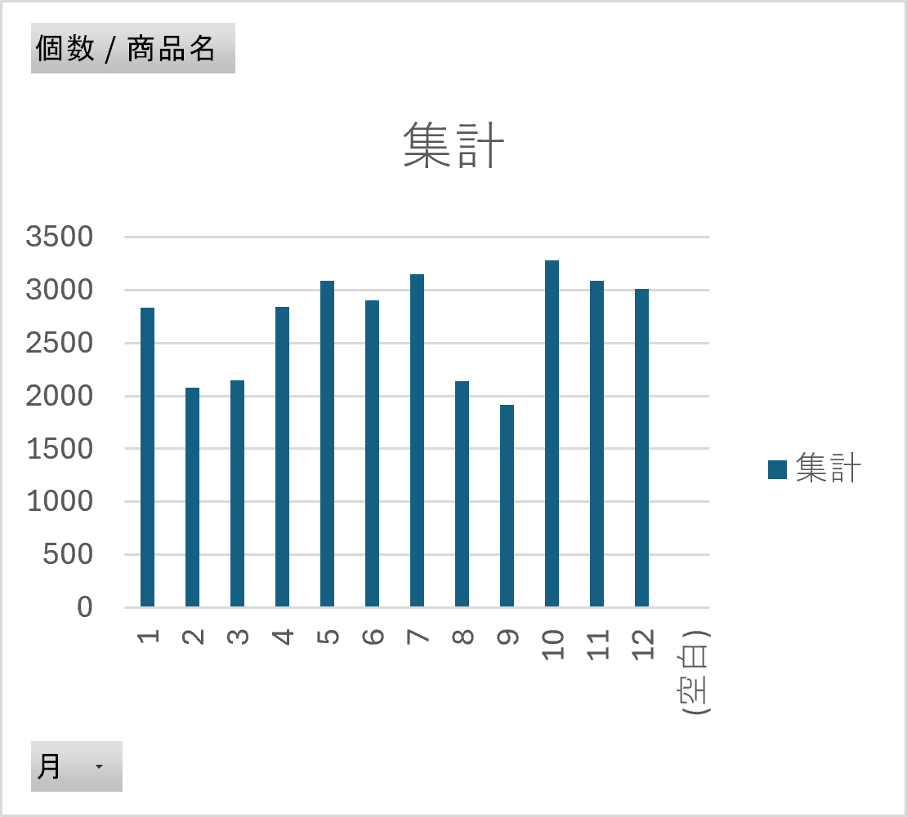
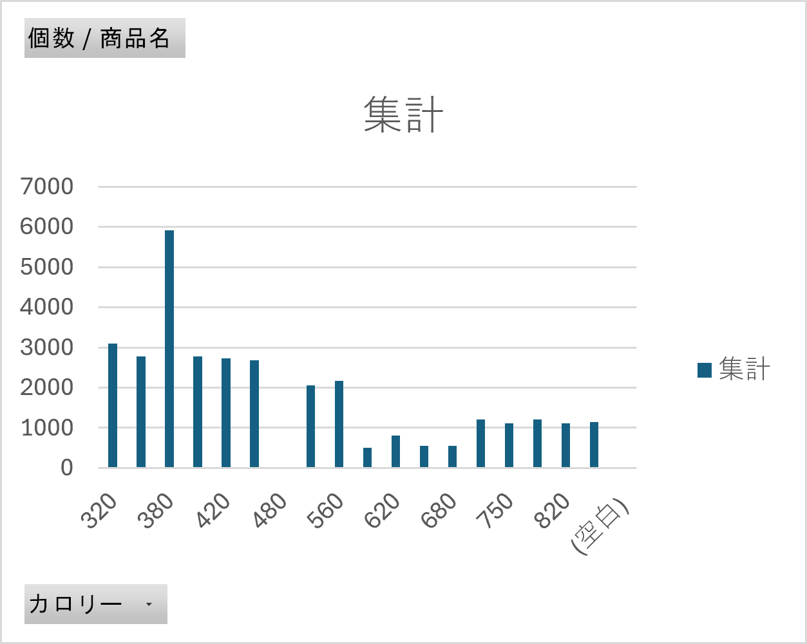
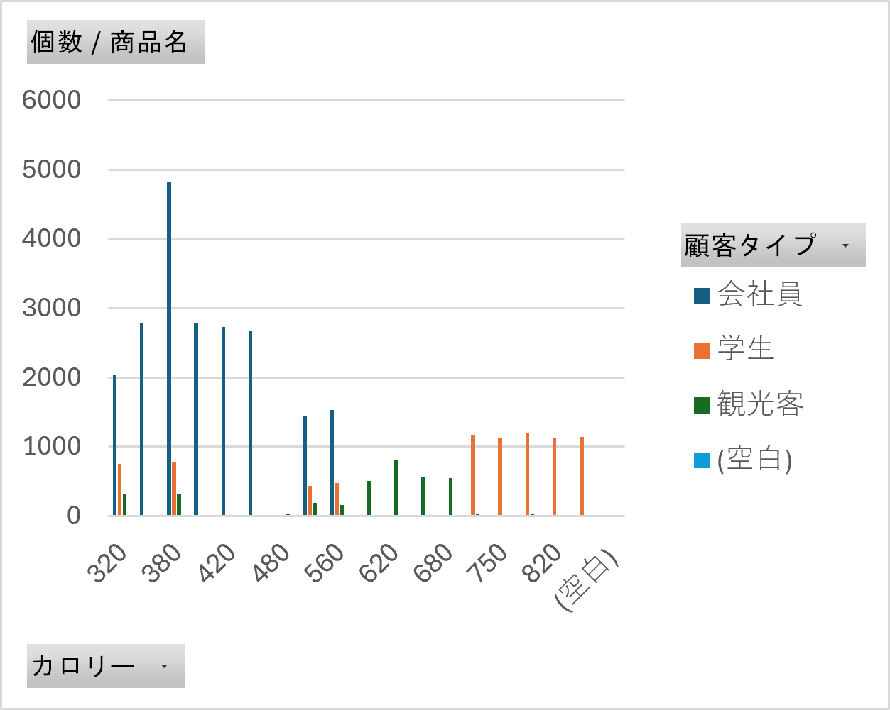
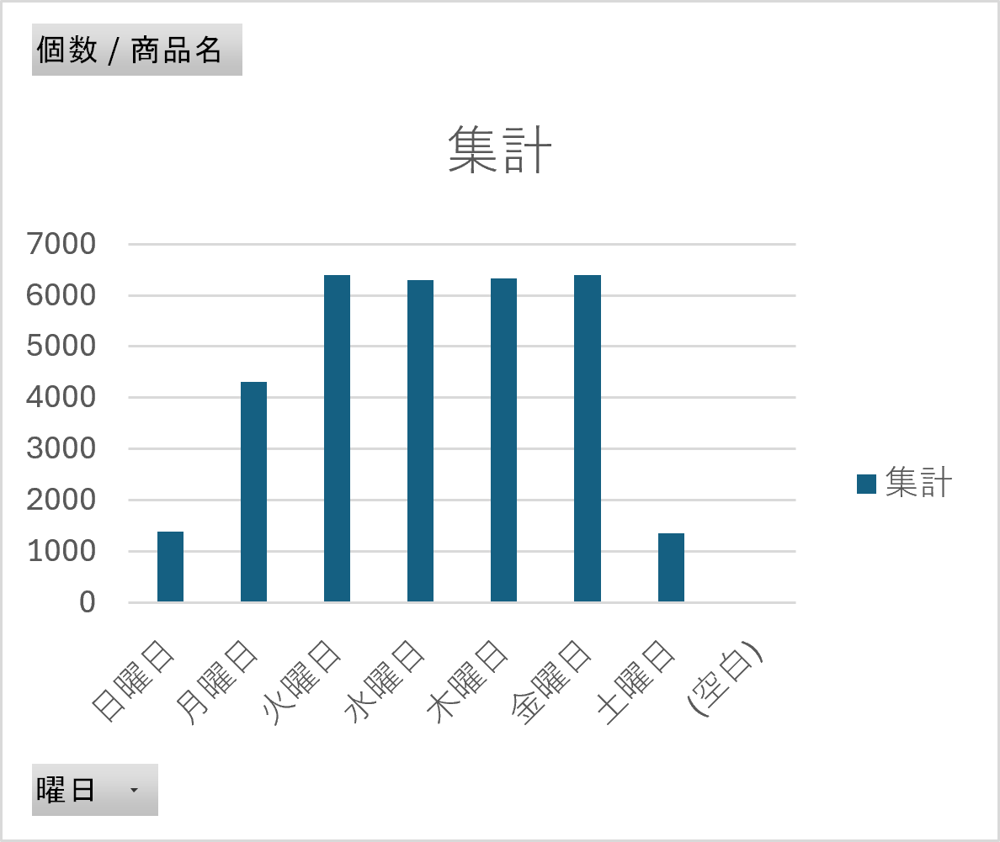
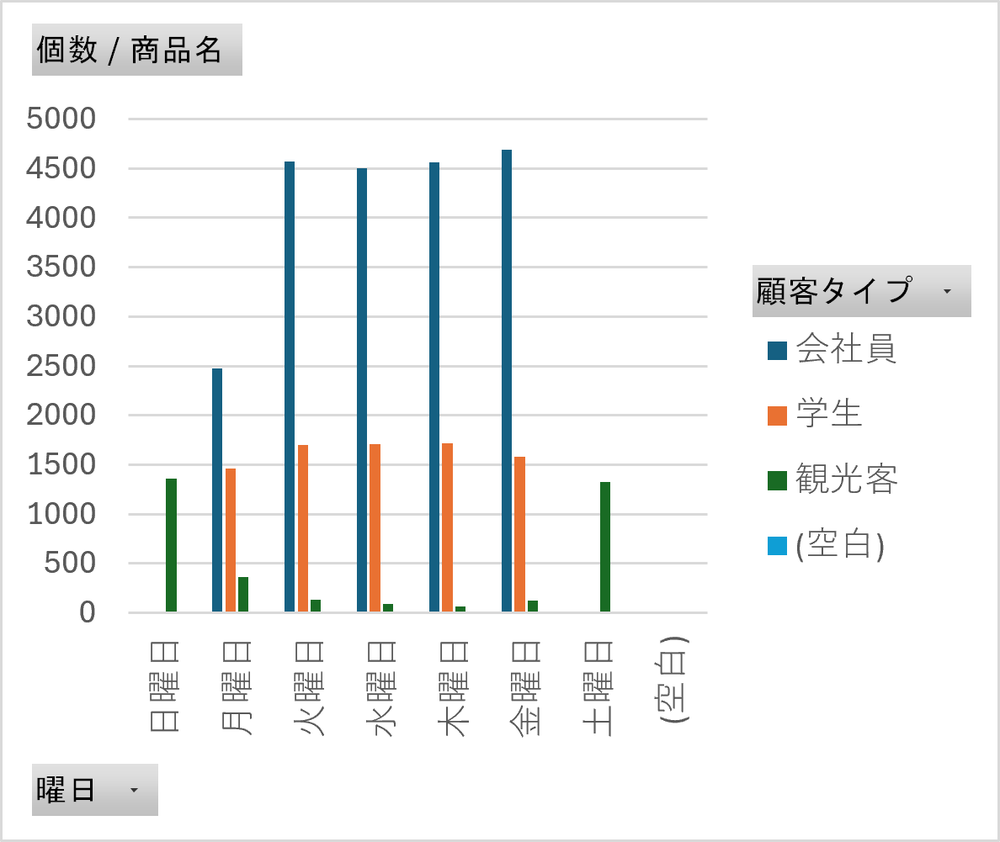

上記のものは月ごとの売上個数である。
全体と比較すると2,3,8,9月は売り上げが減少しているが,学生の長期休みの影響ではないかと考えられる。


左図は売り上げた商品の個数とそのカロリーである。
ここに顧客タイプを重ねた結果が右図であり、この結果から会社員は全体の中でも低～中カロリーとカロリーを抑えたものを購入しているのに対し、
学生は低カロリーよりも高カロリーの商品を購入している傾向にあることがわかる。会社員は健康に気を使い、カロリーを気にする人が多いのではないだろうか。


曜日による売上個数の違いを調べた。土日の売上個数が少なく、平日である月曜日も他の曜日と比較すると少ない。
右図は顧客タイプを重ねた結果であり、土日は観光客の購入者が中心で平日は会社員と学生が中心である。
先ほどの図で月曜日の売上個数が少なかったのは月曜日は会社員の購入者が少なかったからだとわかる。